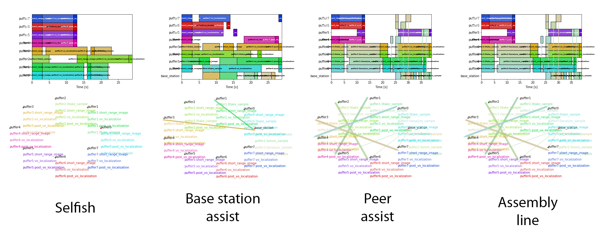
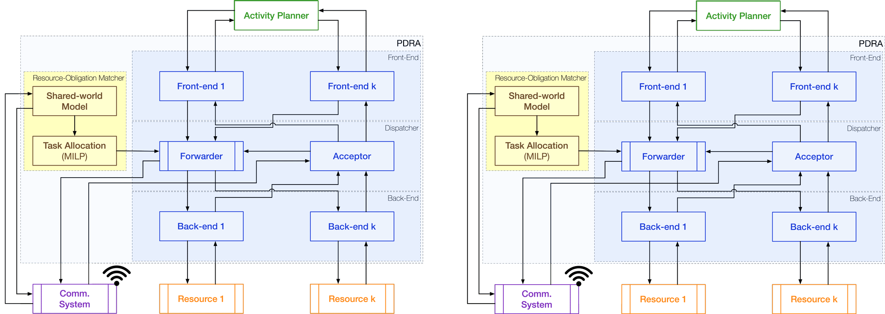

MOSAIC: Multi-Agent On Site Shared Analytics, Information, and Computing¶
- Authors
Federico Rossi
Marc Sanchez Net
Tiago Stegun Vaquero
Martina Troesch
Joshua Vander Hook
- Contacts
- Organizations
- Jet Propulsion Laboratory, California Institute of Technology
Section 347, Mobility and Robotic Systems
Section 332, Communications Research and Architectures
Section 397, Planning and Execution Systems
- Address
4800 Oak Grove Dr. Pasadena, CA 91109
- Release
2.0.0
- Repository
- Abstract
Computational task sharing in heterogeneous multi-robot systems over time-varying communication links
- Licensing
Copyright (c) 2020, Jet Propulsion Laboratory.
This website contains documentation for the MOSAIC schedulers and the Pluggable Distributed Resource Allocator (PDRA).
Together, the tools in MOSAIC enable heterogeneous multi-robot systems to share computational tasks with complex dependencies among agents with heterogeneous computation capabilities over time-varying communication links.
MOSAIC schedulers¶
We propose scheduling and task-allocation algorithms to share computational tasks among heterogeneous agents over time-varying communication links.
Specifically, we propose:
A mixed-integer programming algorithm for scheduling tasks in heterogeneous robotic networks with time-varying communication links. The scheduler can accommodate any non-cyclical dependencies between tasks and arbitrary time-varying communication links, handle optional tasks with associated rewards, and optimize cost functions including rewards for optional tasks, makespan, and energy usage. The scheduler is presented in [1].
A mixed-integer programming algorithm for task allocation in heterogeneous robotic networks with periodic communication links. The task allocation algorithm also accommodates any non-cyclical dependencies between tasks and handles optional tasks with associated rewards and maximum latency requirements; it can maximize reward from optional tasks or minimize energy use. The task allocation algorithm is presented in [2].
Pluggable Distributed Resource Allocator¶
The Pluggable Distributed Resource Allocator (PDRA) is a middleware for distributed computing in heterogeneous mobile robotic networks. It allows the MOSAIC schedulers to be easily “plugged” in existing autonomy executives with minimal software changes. PDRA sits between an existing single-agent planner/executor and existing computational resources (e.g. ROS packages). It intercepts the executor’s requests and, if needed, transparently routes them to other nodes for execution. Simulation results show that PDRA can reduce energy and CPU usage by over 50% in representative multi-robot scenarios compared to a naive scheduler; runs on embedded platforms; and performs well in delay- and disruption-tolerant networks (DTNs). PDRA is available to the community under an open-source license.
References¶
[1] Joshua Vander Hook, Tiago Vaquero, Federico Rossi, Martina Troesch, Marc Sanchez Net, Joshua Schoolcraft, Jean-Pierre de la Croix, and Steve Chien, “Mars On-Site Shared Analytics Information and Computing,” in Proceedings of the Twenty-Ninth International Conference on Automated Planning and Scheduling, vol. 29, no. 1, pp. 707-715, July 2019.
[2] Federico Rossi*, Tiago Stegun Vaquero*, Marc Sanchez Net, Maíra Saboia da Silva, and Joshua Vander Hook, “The Pluggable Distributed Resource Allocator (PDRA):a Middleware for Distributed Computing in Mobile Robotic Networks”, under review.